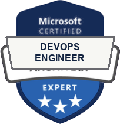

Offensive Security
Pentest e análises para identificar falhas em aplicações, APIs, redes e ambientes corporativos.
Saiba maisSegurança ofensiva · Cloud · DevSecOps · Awareness
Identificamos vulnerabilidades reais, traduzimos riscos em prioridades e ajudamos sua empresa a proteger o que mais importa.
Serviços
Atuação consultiva para empresas que precisam entender riscos, fortalecer ambientes e incorporar segurança às decisões do negócio.
Pentest e análises para identificar falhas em aplicações, APIs, redes e ambientes corporativos.
Saiba maisAvaliação de postura, configurações, acessos e proteção em ambientes AWS e Azure.
Saiba maisSegurança integrada ao desenvolvimento por meio de processos, pipelines e ferramentas.
Saiba maisTreinamentos e campanhas para reduzir riscos humanos e fortalecer a cultura de segurança.
Saiba maisPor que GNOSIS?
Investigação responsável, comunicação objetiva e acompanhamento consultivo para transformar achados em decisões práticas.
Análises orientadas por evidências, exploração controlada e validação do impacto real.
Riscos, prioridades e próximos passos apresentados de forma útil para liderança e times técnicos.
As correções são verificadas para confirmar que a exposição foi efetivamente reduzida.
Cada projeto considera o ambiente, os objetivos e a maturidade de segurança da empresa.
Credenciais verificadas
O time reúne certificações reconhecidas em segurança ofensiva, arquitetura de cibersegurança, aplicações e DevOps.
 OSCP
OSCP OSCP+
OSCP+ OSWE
OSWE CEH
CEH Cybersecurity Architect
Cybersecurity Architect
DevOps Engineer EXIN Ethical Hacking
EXIN Ethical HackingComo trabalhamos
Cada etapa reduz incertezas, organiza decisões e mantém a execução alinhada ao contexto do cliente.
Definição de objetivos, ativos, limites e regras de execução.
Testes e análises técnicas de acordo com o escopo aprovado.
Classificação dos achados por criticidade, impacto e contexto.
Relatórios técnico e executivo, evidências e apresentação dos resultados.
Validação das correções e orientação sobre os próximos passos.
Quem somos
A GNOSIS Security é formada por profissionais experientes e certificados, com foco em identificar, analisar e corrigir pontos fracos antes que se tornem incidentes.
A atuação reúne visão ofensiva, análise técnica e acompanhamento consultivo para apoiar empresas que precisam reduzir risco com prioridade e clareza.
Conversar com a equipeO que entregamos
A entrega conecta detalhes técnicos, impacto para o negócio e recomendações priorizadas para facilitar a tomada de decisão.
Vulnerabilidades, evidências, impacto e recomendações para correção.
Visão de riscos, prioridades e próximos passos para lideranças.
Debrief com achados, impactos e plano de ação recomendado.
Orientação para correções e validação da efetividade das melhorias.
Perguntas frequentes
Se a sua dúvida não estiver aqui, fale com a equipe. A conversa inicial ajuda a identificar o escopo mais adequado.
Aplicações, APIs, redes, serviços expostos, configurações, acessos e outros ativos definidos no escopo aprovado.
Os testes seguem regras de execução, janela acordada e controles de segurança para reduzir o risco operacional.
Sim. A entrega contempla uma visão técnica com evidências e recomendações, além de um resumo executivo para priorização.
Sim. O reteste valida se as correções aplicadas foram efetivas e se a exposição foi reduzida.
Avaliamos postura, configurações, acessos, permissões e controles em ambientes como AWS e Azure.
Próximo passo
Conte o seu objetivo, o ambiente envolvido e a urgência. A GNOSIS ajuda a organizar o ponto de partida.